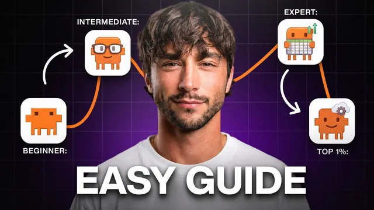

아직 안 늦었습니다 — 22분 AI 입문

원본 영상 보기 →
- AI 활용의 격차는 지능이 아니라 "어디까지 알고 있느냐"에서 와요
- 모든 기능은 "지식"과 "도구" 두 가지 중 하나를 키우는 일이에요
- 자동화는 한 번에 만드는 게 아니라 3단계로 "걸어 올리는" 거예요
한 줄 요약
같은 20달러짜리 Claude 계정을 쓰면서도 누구는 검색창처럼, 누구는 삶 전체를 굴리는 운영체제처럼 씁니다. Liam Ottley가 완전 초보부터 상위 1% 사용자까지 올라가는 "사다리"를 정리한 영상인데요. 지식(knowledge)과 도구(tools)라는 두 축으로 단계별로 짚어줍니다.
전체 내용 정리
같은 앱, 같은 20달러인데 왜 결과가 다를까요 — Dave와 Marcus 이야기
Liam은 똑같은 20달러짜리 Claude 계정을 두 사람에게 준 상황을 예로 들어요.
Dave는 Claude를 좀 더 똑똑한 구글처럼 질문만 던지는 데 씁니다. Marcus는 자기 삶 전체를 Claude 위에서 굴려요. Marcus가 자는 동안에도 Claude가 일을 하고, 하루를 잡아먹던 잡무를 대신 처리하고, 없는 도구가 필요하면 말로 설명해서 만들어 쓰죠.
차이는 머리가 아니라 "사다리를 올라갔느냐"입니다.
Liam은 3년간 수십만 명과 기업에 AI 사용법을 가르쳐 왔어요. 사다리 맨 위에서는 기업 오너들이 수만 달러를 주고 사가는 자신의 Claude 셋업 전체를 무료로 공개하겠다고 예고합니다.
모든 것의 출발점: Claude는 웹사이트가 아니라 풀타임 비서예요
핵심 사고 전환은 이겁니다. "Claude를 질문하는 웹사이트가 아니라 새로 뽑은 풀타임 개인 비서로 생각하라."
어떤 비서든 딱 두 가지가 필요하잖아요. 내 상황을 아는 것(지식, knowledge), 그리고 실제로 뭔가를 할 수 있는 도구(tools)요. 영상에서 보여주는 모든 기능은 이 둘 중 하나를 키우는 일이에요.
사다리 맨 아래에서는 Claude의 지식이 "채팅창에 내가 타이핑한 것"뿐이고, 도구도 기본 내장된 것뿐입니다.
초보 레벨 1: 진짜 앱 설치하고, 모델을 골라 쓰고, 도구를 켜세요
대부분은 아직 브라우저 탭에서 Claude를 쓰지만, 강력한 기능은 거기 없어요. 컴퓨터에 데스크톱 앱, 휴대폰에 모바일 앱을 설치해야 합니다.
화면에는 대화창, 어떤 "두뇌(모델)"를 쓸지 고르는 선택기, 그리고 하단에 도구 버튼 줄이 있어요. 모델은 빠른 일상용 빠른 두뇌와 중요한 작업용 훨씬 강력한 두뇌로 나뉘며, 일에 맞는 두뇌를 골라 쓰는 게 중요합니다.
Liam은 "당신은 앱이 아니라 '일(work)'을 사는 것"이라며 강조해요. 사용량 한도에 걸리면 무료 버전에 머물지 말고 20달러 또는 90달러 요금제로 올리라고요.
그다음 web search 같은 도구들을 설정에서 켜두기만 하면, 언제 쓸지는 Claude가 알아서 판단합니다.
설정에 있는 김에 하나 더요. 내 대화를 미래 모델 학습에 쓸지 결정하는 토글을 꺼서 프라이버시를 지키라고 조언합니다.
초보 레벨 2: 말하는 대화법과 인터뷰 시키기
초보 단계에서 가장 큰 변수는 "Claude에게 말을 거는 방식"이에요.
Claude는 내가 준 것만으로 답을 만들거든요. 게으른 한 문장을 주면 추측으로 채우고, 전체 맥락을 주면 놀라운 결과를 빠르게 돌려줍니다.
첫 번째 습관은 타이핑을 멈추고 말하기 시작하는 거예요. 말은 타이핑보다 약 3배 빠르니 같은 노력으로 3배 많은 정보를 넣을 수 있죠. Liam은 Glido라는 음성 받아쓰기 앱을 쓰는데요. 90초 동안 한 주에 있었던 일과 숫자와 문제를 두서없이 말하면, Claude가 팀에 넘길 깔끔한 리포트로 정리해 준다고 합니다.
두 번째 습관은 "Claude에게 나를 인터뷰시키기"예요. 중요한 요청을 하기 전에 "답하기 전에, 이걸 제대로 하기 위해 필요한 질문을 전부 나에게 물어봐"라고 말하는 거죠.
결혼식 축사를 그냥 요청하면 인사 카드 수준이 나옵니다. 하지만 먼저 인터뷰하게 하면 길이·톤·감정선을 물어본 뒤, 내가 쓴 것 같은 축사가 나와요.
초보 레벨 3: Claude를 믿지 말고 양쪽을 다 뽑으세요
거의 아무도 경고해 주지 않는 게 있어요. Claude를 그대로 믿으면 안 됩니다.
Claude는 당신을 기쁘게 하도록 만들어져서 절벽까지 함께 동의하며 걸어가거든요. 그래서 반박하게 만들어야 해요.
"이 아이디어를 지지하는 가장 강력한 근거를 대고, 그다음 반대하는 가장 강력한 근거를 대"라고 요청하는 겁니다. 이걸 steel manning(가장 강한 형태로 옹호)과 straw manning이라 부르는데요. 양쪽을 다 놓고 보면 어떤 선택이 나은지 훨씬 판단하기 쉬워요.
그리고 사실이나 숫자를 받으면 "증명해봐 — 모든 주장을 검증하고 출처를 보여줘"라고 말하세요. 그러면 지어낸 부분을 고치고 실제 출처를 링크해 줍니다.
초보 레벨 4: 새 작업엔 새 채팅, 그리고 deep research
초보가 가장 많이 틀리는 게 하나 있어요. Claude는 한 번에 담을 수 있는 맥락의 양(context window, 맥락 창)이 정해져 있다는 점입니다. 한 채팅이 길어질수록 앞부분을 잊고 뒤섞어서 답이 나빠지죠.
해법은 간단해요. 새 작업을 시작할 때마다 새 채팅을 엽니다("새 작업, 새 채팅").
마지막으로 deep research(딥 리서치)예요. 내 문제는 새로운 게 아니라 누군가 이미 겪고 글로 남겼다는 전제 아래, 토글 하나 켜고 질문한 뒤 자리를 뜨면 몇 분 뒤 출처까지 붙은 전체 리포트를 가져다줍니다. 주말 내내 구글링하던 조사 작업이 커피 한 잔 시간으로 줄어들죠.
Liam은 사다리 맨 위에서 이 deep research 도구를 직접 다시 만들어, 기본 상태로는 못 가는 곳까지 검색하게 했다고 예고합니다.
고급 레벨 1: Claude에게 나에 대한 영구 기억을 심으세요
초보를 끝내도 비서 Claude는 금붕어 기억력이에요. 내일 채팅을 닫으면 나에 대해 아무것도 기억하지 못하죠.
먼저 할 일은 기억 구축입니다. ChatGPT를 1년 써왔다면 그게 나에 대해 아는 게 많으니, ChatGPT에서 데이터를 export(내보내기)해 그 파일을 새 Claude 채팅에 넣고 "이걸 전부 분석해서 나에 대한 중요한 것을 memory에 저장해"라고 하면 돼요.
그다음 Claude 설정에서 memory(기억)를 켜두면 이후 모든 대화에서 계속 학습합니다. 일주일쯤 지나면 지난 화요일에 말한 걸 아무렇지 않게 언급하기 시작해요.
고급 레벨 2: 규칙을 한 번만 설정하고, brain dump로 프로필을 만드세요
바리스타에게 커피 취향을 한 번만 말하듯, 설정에 Claude가 모든 채팅에서 어떻게 행동할지 적어둡니다.
Liam의 규칙은 이래요. "직설적으로, 군더더기 빼고, 큰 일 시작 전엔 항상 나에게 질문부터 해." 마지막 항목이 초보 레벨의 인터뷰 트릭을 모든 채팅에서 자동으로 일어나게 만들죠.
이 레벨의 핵심 동작은 brain dump(브레인 덤프)입니다. 새 비서를 뽑으면 첫날 모든 걸 알려주듯, Glido 같은 음성 받아쓰기 앱을 켜고 내가 누구인지, 무슨 일을 하는지, 가족, 일, 목표를 두서없이 쏟아내는 거예요.
Claude에도 음성 받아쓰기가 내장돼 있지만, 별도 앱을 쓰면 컴퓨터에서 하는 모든 입력이 평균 3배 빨라지고 상위 1% AI 사용자는 다 이걸 쓴다고 합니다.
그 메모를 Claude에 넣고 "이걸 내 영구 프로필로 만들어 memory에 저장해"라고 하면, 다시는 자기소개를 할 필요가 없어요.
고급 레벨 3: projects — 삶의 한 부분을 위한 맥락 서랍
projects(프로젝트)는 30초짜리 이론이 필요해요.
memory는 내가 누구인지 높은 수준에서 알지만, project는 내 삶의 특정 부분 하나를 위한 전용 맥락 은행입니다. 서랍이라고 생각하면 돼요.
한 가지 주제에 관한 모든 문서를 그 서랍에 넣어두면, 그 안에서 여는 어떤 채팅이든 그 내용을 이미 다 압니다. 파일을 다시 업로드하거나 상황을 다시 설명할 필요가 없죠.
직장의 큰 업무마다 하나씩, 계획 중인 개인 여행에 하나씩 만들어 리포트·예시·노트·통화 녹취를 넣어두면 됩니다.
고급 레벨 4: connectors로 Claude에게 손을 달아주세요
이제 비서는 나를 잘 알지만, 여전히 건물 밖 빗속에 서서 내 받은편지함, 캘린더, 파일을 못 봅니다.
connectors(커넥터)로 가서 이메일과 캘린더를 먼저 연결하고, 이후 Notion, Google Drive, Slack 등 수백 개 연결 목록을 훑어보세요.
이 레벨의 철학은 "Claude를 내가 일하는 단 하나의 장소로 만들라"는 거예요. 쓰는 앱이 있으면 그 웹사이트나 앱이 아니라 Claude 안에서 씁니다.
보상은 즉각적이에요. "오늘 내가 놓치고 있는 게 뭐야?"라고 물으면 실제 받은편지함과 캘린더에서 답하죠. Google Sheets를 연결해 데이터를 분석하고 바로 Notion에 페이지를 밀거나 슬라이드를 만들 수도 있고요.
안전에 대해서도 짚어줍니다. Claude가 받은편지함을 자유롭게 읽되, 이메일을 보낼 때는 초안만 만들고 내가 승인해 send를 눌러야만 실제로 나가요. 연결한 것마다 스스로 할 수 있는 것과 물어봐야 하는 것을 내가 정하면 됩니다.
고급 레벨 5: artifacts와 browser, 그리고 teach mode
지금까지는 결과가 채팅 안 텍스트 벽으로 왔잖아요.
artifacts(아티팩트)는 실제 물건을 돌려주기 시작합니다. "슬라이드 덱으로 만들어" 하면 채팅 옆에 덱이 나타나고, "제대로 된 문서로", "이걸로 계산기 만들어" 하면 클릭해서 쓸 수 있는 도구가 나와요. 대화하는 동안 눈앞에서 실시간으로 업데이트되죠.
browser(브라우저)는 Claude Chrome 확장입니다. Claude가 내가 보는 페이지를 실제로 보고 대신 읽거나 폼을 채우거나 버튼을 클릭해줘요.
그 안의 teach mode(티치 모드)는 화면 공유로 신입을 교육하는 것과 같아요. 매달 청구서가 메일로 오면 내가 송장 사이트를 열어 내용을 입력하고 제출하잖아요. teach mode를 켜고 한 번만 Claude가 지켜보게 하면, 다음 달부터 그 루틴을 혼자 처리합니다.
고급 레벨 6: co-work — 방을 떠나는 순간
채팅창 하단의 chat/co-work 토글을 co-work로 바꾸고, 컴퓨터에 폴더를 만들어 Claude를 그쪽으로 가리키면, 그 폴더가 Claude의 세계 전체가 돼요.
project를 강화한 버전이라고 보시면 됩니다. 그 안의 내용을 알 뿐 아니라 그 안에서 작업도 할 수 있죠.
"이 영수증들을 훑어서 요약 스프레드시트를 만들고 회계사에게 보낼 이메일 초안을 써"처럼 완결된 일을 주면, 단계를 계획하고 진행해 완성된 파일을 그 폴더에 놓아둡니다. 내가 커피를 마시고 오는 동안에요.
안전장치도 내장돼 있어 그 폴더 하나 밖은 건드리지 못해요.
고급 레벨 7: skills와 routines, 그리고 dispatch
skill(스킬)은 레시피 카드예요. 주에 몇 번 이상 하는 일이면 레시피를 한 번 써두고, 그다음부터는 한 단어로 Claude가 매번 똑같은 방식으로 요리합니다.
재미있는 건 레시피를 내가 쓰지 않는다는 점이에요. "매주 이 숫자들을 뽑아 이렇게 포맷해서 이 사람들에게 보내 — 이걸 스킬로 만들어"라고 말하면 Claude가 스킬을 스스로 만들어줍니다. 그다음 /weekly-report만 치면 돼요.
그 스킬을 타이머에 올릴 수도 있습니다(routine, 루틴). 매일 아침 7시에 돌게 설정하면 일어났을 때 브리핑이 기다리죠. 최근에는 클라우드에서 돌아서 노트북을 열어둘 필요도 없어요.
앱에서 QR 코드를 스캔하면 휴대폰이 컴퓨터와 페어링되는데, 이걸 dispatch(디스패치)라 합니다. 금요일 밤 우버 안에서 뭔가 생각나면 집에 있는 컴퓨터에 문자로 일을 보내고, 끝나면 알림이 와요.
전문가 레벨: 쓰는 사람에서 만드는 사람으로
마지막 레벨은 결이 다릅니다. Liam은 "미래는 만들 수 있는 사람의 것"이라 믿어요. 만드는 사람이 쓰기만 하는 사람보다 항상 앞선다고요.
Steve Jobs도 검은 터틀넥 전에는 차고에서 손으로 컴퓨터를 만드는 진짜 너드였고, 누구도 기다릴 필요가 없었죠.
Liam은 컴퓨터과학 학위도 정식 교육도 없지만, 3년간 Claude를 도구이자 선생으로 써서 NBA 팀, Fortune 500, 상장사의 AI 시스템을 만들었다고 합니다.
앱 상단의 code(코드) 탭이 그 입구예요. 지금까지와 똑같은 챗봇 대화지만 천장이 완전히 사라진 곳이죠.
Claude chat에서는 내가 메시지마다 조종하고, co-work에서는 일을 통째로 넘기지만 폴더 안 남의 도구를 씁니다. Claude Code에서는 천장이 아예 없고 자기 도구를 스스로 만들어요.
내 정확한 루틴에 맞춘 운동 트래커, 우리 가족이 실제로 먹는 걸 아는 식단 플래너처럼요. 앱스토어가 팔 수 없는, 나만을 위해 존재하는 도구를 말로 설명하면 만들어 줍니다.
전문가 레벨 도구: Claude Design과 워크스페이스 템플릿, 5개 명령어
Claude Design(클로드 디자인)은 데스크톱 앱에 내장된 별도 모드로, 슬라이드·포스터·초대장·로고·웹 디자인 등 시각적인 것을 위해 만들어졌어요. 원하는 걸 설명하면 티나는 AI 느낌이 아닌 전문가 같은 결과가 나오고, 마음에 들면 그대로 Claude Code에 넘겨 실물로 만들 수 있습니다.
이 레벨의 가장 어려운 부분은 빈 화면이에요. 그래서 Liam은 자신의 Claude Code 워크스페이스 템플릿을 무료로 줍니다(창업자들에게 2만 달러 이상 가치라고 하네요). 안에 있는 설치 명령어 하나가 맥락·파일·연결 설정을 단계별로 인터뷰하며 워크스페이스를 만들어 줘요.
그리고 초보용 빌딩 툴킷 5개 명령어도 있습니다. /explore(새 앱·자동화 아이디어 탐색), /create-plan(계획), /implement(구축), /test(테스트), /handoff(새 세션으로 인계)요. 이것만으로 뭐든 만들기가 쉬워져요.
전문가 레벨: API 키와 확장된 deep research
API 키는 즐겨 쓰는 앱으로 들어가는 깊은 연결로, 원클릭 커넥터보다 한 단계 위예요. 플랫폼당 5~10분이 더 들지만 단순 커넥터가 닿지 못하는 연결을 풉니다. 템플릿의 설치 명령어를 돌리면 Claude가 주요 앱들의 키를 어떻게 얻는지 단계별로 안내해줘요.
그리고 초보 레벨의 그 deep research 기억하시나요. 기본 상태로는 주로 일반 웹만 검색합니다.
인터넷상 인류 지식을 파이라고 하면 웹페이지는 한 조각일 뿐이에요. YouTube·팟캐스트·인스타·틱톡·논문·X·Reddit이 각각 다른 조각이죠. Liam은 Claude Code로 deep research 스킬을 다시 만들어 이 모든 조각을 검색하게 했고, 그 스킬 전체가 템플릿 안에 들어 있다고 합니다.
자동화 스펙트럼: 손으로 → 도와줌 → 알아서, 그리고 AI 운영체제
Liam이 모든 일을 바라보는 방식은 automation spectrum(자동화 스펙트럼)이에요. 3단계가 있습니다.
1단계는 일을 손으로 직접 해요. 워크스페이스에서 이메일함을 직접 확인하다가 이걸 반복하고 있다는 걸 알아챕니다.
2단계는 그걸 스킬로 만들어 Claude가 함께 해요. 첫 한두 주는 내가 교정해 주며 스킬이 점점 정확해지죠.
3단계는 스킬이 완벽하게 다듬어진 어느 날, 그 스킬을 루틴에 올려 배경에서 스케줄대로 혼자 돌게 합니다(automated, 자동화됨).
이게 제대로 되려면 전체 맥락과 모든 앱 연결을 갖춘 워크스페이스 안의 Claude Code에 있어야 해요. Liam은 이걸 AI operating system(AI 운영체제)이라 부릅니다.
사고 전환은 이거예요. 내 진짜 일은 더 이상 작업을 하는 게 아니라, 작업을 이 세 단계로 걸어 올리는 겁니다.
code 안에서는 스킬끼리 서로를 호출해 명령어 하나가 여러 개의 체인을 돌리고, 루틴은 타이머를 넘어 이메일 도착·폼 제출·판매 발생 같은 사건에 즉시 반응해요. Claude remote control(원격 제어)로 휴대폰의 Claude 앱에서 이 운영체제 전체를 어디서든 쓸 수 있습니다.
마지막으로 Dave와 Marcus 이야기로 돌아와요. 같은 앱, 같은 20달러지만 Marcus는 특별하지 않았고 그저 사다리를 올라갔을 뿐이라고요.
Liam의 조언은 이렇습니다. "오늘 밤 다 하려 하지 말고, 템플릿만 내려받아 설치 명령어를 돌리고, 자기 전에 진짜 일 하나만 코드로 처리해 보라."
핵심 인사이트
- AI 활용의 격차는 지능이 아니라 "어디까지 알고 있느냐"에서 와요: Dave와 Marcus는 같은 도구를 쓰지만 결과가 다릅니다. 대부분은 브라우저 탭에서 질문만 던지는 맨 아래 칸에 머물고, 그 위에 메모리·커넥터·스킬·자동화라는 칸이 있다는 사실 자체를 모르죠. 사다리의 존재를 아는 것이 첫 번째 이득이에요.
- 모든 기능은 "지식"과 "도구" 두 가지 중 하나를 키우는 일이에요: 비서에게 필요한 건 내 상황을 아는 것과 실제로 뭔가 할 수 있는 수단뿐이라는 단순한 프레임이, 수십 개 기능을 외울 대상이 아니라 두 축으로 정리해 줍니다. 새 기능을 볼 때마다 "이건 지식이야 도구야?"만 물으면 돼요.
- 자동화는 한 번에 만드는 게 아니라 3단계로 "걸어 올리는" 거예요: 손으로 직접 → 스킬로 만들어 함께 하며 교정 → 완벽해지면 루틴에 올려 혼자 돌게. 처음부터 완전 자동화를 노리다 실패하는 대신, 반복하는 일을 스펙트럼 위에서 한 칸씩 올린다는 관점이 실행 가능한 경로를 줍니다.
- AI를 믿지 말고 양쪽 근거를 다 뽑게 하세요: Claude는 사용자를 기쁘게 하도록 만들어져 "절벽까지 동의하며 걸어갑니다". 찬성·반대 근거를 모두 요청하고(steel/straw manning), 숫자엔 "증명해봐"로 출처를 강제하는 습관이 응원단이 아닌 진짜 판단 근거를 만들어줘요.
오늘 당장 해볼 것
- Claude 데스크톱 앱과 모바일 앱을 설치하고, 설정에서 web search 등 도구를 켜고, "대화를 모델 학습에 사용" 토글을 끄세요. 그다음 설정의 개인 지침에 "직설적으로, 군더더기 빼고, 큰 일 시작 전엔 항상 나에게 질문부터 해"를 넣어보시면 좋아요.
- 중요한 요청을 하기 전에 "답하기 전에, 이걸 제대로 하기 위해 필요한 질문을 전부 나에게 물어봐"를 붙여 Claude가 나를 인터뷰하게 하세요. 결정이 필요한 사안은 "지지하는 가장 강한 근거와 반대하는 가장 강한 근거를 각각 대"라고 요청하시면 됩니다.
- 음성 받아쓰기 앱(Glido 등)을 켜고 5~10분간 내가 누구이고 무슨 일을 하며 목표가 뭔지 두서없이 말한 뒤, 그 메모를 Claude에 넣고 "내 영구 프로필로 만들어 memory에 저장해"라고 해보세요. 설정에서 memory를 켜두시는 것도 잊지 마시고요.
- 이메일과 캘린더를 connectors로 연결하고, 매일 아침 "오늘 내가 놓치고 있는 게 뭐야?"라고 물어보세요. Claude는 이메일 초안만 만들고 내가 승인해야 발송된다는 점도 확인해두시면 안심이 돼요.
- 이번 주에 가장 자주 반복하는 잡무 하나(파일 취합, 받은편지함 정리, 주간 리포트 등)를 골라 Claude에게 "이 과정을 스킬로 만들어"라고 시켜보세요. 한두 주 교정하며 다듬은 뒤 루틴(스케줄)에 올리면 됩니다.